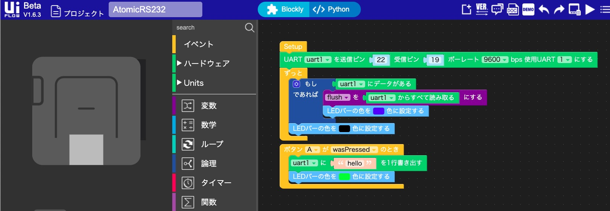

M5Stack社の製品にまつわる新情報を月単位にまとめてお届けするコーナーです。
2020年8月は次の11製品の販売が始まりました。

|
Kendryte K210を搭載したAIカメラで、従来のM5StickVと16GB SDカードがセットになったモデルです。 3月以降の新モデルではピンアサインが変更されています。本製品は高性能なニューラルネットワークプロセッサ（KPU）とデュアルコア 64 bit RISC-V CPUを使用しており、低コストかつ高いエネルギー効率で高性能な画像処理を行うことができます。 |

|
Kendryte K210を搭載したAIカメラで、従来のM5UnitVと16GB SDカードがセットになったモデルです。 M5StickVとの違いは、液晶やバッテリー、ジャイロセンサが非搭載になり、小型軽量になった点です。 M5StickCと組み合わせることで、補完して使うことが可能です。 |

|
M5ATOMをマウントし使用するATOMICシリーズのGPSモジュールです。 測量チップはM8030-KTで、米国のGPS、ロシアのGLONASS、EUのGalileo、中国のBDS、日本のSBAS、QZSS衛星システムに対応しています。 TF（MicroSD）カードがあり、GPSなどのデータの読み書きが可能です。また本商品にはATOMLiteが付属しています。 |

|
ATOMICシリーズのTF（MicroSD）カードです。容量16GバイトまでのTFカードに対応します。当商品にはATOMLiteが付属しています。 |

|
ATOMICシリーズのバーコード/QRコードスキャナモジュールです。 6形式の2次元コードと19形式の1次元コードに対応しています。照明用LEDにより暗い場所でもコードを識別でき、独自のブザーにより、さまざまな状態で異なるプロンプトサウンドを発生できます。 当商品にはATOMLiteが付属しています。 |

|
ATOMICシリーズのRS232キットです。TTLレベルとRS232レベルを変換し、RS232側から電源を供給できます。 RS232はパソコンとの通信や産業用モジュールで広く使われているシリアル通信の標準規格です。 当商品にはATOMLiteが付属しています。 |

|
ATOMICシリーズのRS485キットです。TTLレベルとRS485レベルを変換し、RS485側から電源を供給できます。 RS485は産業用モジュールで広く使われている差動信号規格です。当商品にはATOMLiteが付属しています。 |

|
ADXL345を搭載したモーションセンサユニットです。x、y、ｚの3軸で加速度を取得できます。 |

|
高さ26mmの産業用途向けプロトタイピング用M5ボトムです。パッケージには、独自の回路設計を追加できるプロトタイピング用基板が含まれます。 基板上には、GROVE互換のボンディングパッドが2組あり、他に、M型防水ジョイントとTTL/RS485変換基板も搭載しています。M型防水ジョイント（M12×15）はベースの側面と底部上に設置できます。 |

|
M5Stack BasicやGrayのボトムを、M5GOやFIREと同じボトムにアップグレードするためのパーツです。 大容量バッテリー（500 mAh）、LEGO用の取り付け穴、アナログマイクロフォン、LEDバー、Groveポート二つなどが追加されています。 |

|
バランスカー（倒立振子）が作れるキットです。キットにはM5StickC、交換可能な充電池、360°サーボ2個が含まれます。 UIFlowグラフィックインターフェイスを使って、プログラムできます。 |
8月の注目製品はATOMICシリーズです。M5ATOMをマウントし使用する拡張モジュールをATOMICシリーズと呼び、2020年7月以前にATOMICプロトキットが発売されました。 8月には一挙に次の5製品が販売開始になりました。
ATOMシリーズを組み合わせるので、プログラミングはArduino IDE、UI Flow（Blockly、MicroPython）でおこないます。原稿執筆時点でArduino IDEのスケッチ例には今回のATOMICシリーズのサンプルコードはなく、UI FlowのV1.4.5、V1.6.3Betaにもサポートするブロックはありませんが、以下のURLにサンプルコードが掲載されています。
https://github.com/m5stack/M5-ProductExampleCodes/tree/master/AtomBase
サンプルコードを利用するには https://github.com/m5stack/M5-ProductExampleCodes にアクセスし、右上の「Code」ボタン、「Download ZIP」とクリックしてZIPファイルをダウンロードします。ZIPファイルを展開し、「AtomBase」フォルダの中のサンプルコードを使うのがわかりやすいでしょう。
製品ごとにサンプルコードを簡単に解説します。
Arduinoのサンプルコードが提供されています。GPSオブジェクトを定義し、 setup 関数で初期設定をおこない、 upDate 関数を呼ぶと緯度経度、時刻情報が得られます。
#include "GPSAnalyse.h" // ヘッダーファイルをインクルード
GPSAnalyse GPS; // GPSオブジェクトを定義する
// setup関数で以下の初期設定をおこなう
GPS.setTaskName("GPS"); // タスク名をつける
GPS.setTaskPriority(2); // タスクのプライオリティを設定する
GPS.setSerialPtr(Serial1); // GPSと通信するシリアルポートとしてSerial1を指定する
GPS.start(); // GPSモジュールを起動する
// loop関数で
GPS.upDate(); // upDate関数でGPSモジュールからデータを取得する
Lat = GPS.s_GNRMC.Latitude; // 緯度を取得する
Lon = GPS.s_GNRMC.Longitude; // 経度を取得する
Utc = GPS.s_GNRMC.Utc; // UTC（協定世界時）を取得する
ArduinoのサンプルコードにTF（MicroSD）カードにアクセスする以下の関数が提供されています。
void listDir(fs::FS &fs, const char * dirname, uint8_t levels); // ディレクトリの中身を表示する
void createDir(fs::FS &fs, const char * path); // ディレクトリを生成する
void removeDir(fs::FS &fs, const char * path); // ディレクトリを削除する
void readFile(fs::FS &fs, const char * path); // ファイルを読む
void writeFile(fs::FS &fs, const char * path, const char * message); // ファイルに文字列を書く
void appendFile(fs::FS &fs, const char * path, const char * message); // ファイルに文字列を追加する
void renameFile(fs::FS &fs, const char * path1, const char * path2); // ファイル名を変更する
void deleteFile(fs::FS &fs, const char * path); // ファイルを削除する
Arduinoのサンプルコードと UI Flow プログラムが提供されています。Arduinoのサンプルコードはボタンを押すとスキャンし、Serial2を読むとスキャンした情報が得られるという簡単なものです。UI Flow ブロックは、ダウンロードして展開したファイルの AtomBase¥AtomicQR¥UIFlow フォルダの中の Atomic_QR.m5f ファイルをUI Flowで読み込むと見られます。
Arduinoのサンプルコードと UI Flow プログラムが提供されています。ArduinoサンプルコードはSerial2でRS232、RS485の通信をおこなう簡単なものです。UI Flowプログラムも同様です。

もう一つ、面白い製品はBALA-C ミニセルフバランスカーです。日本では倒立振子とも呼ばれ、2輪で前後に細かく動きながらバランスを取って立つ製品です。本キットにはM5StickC、交換可能な充電池、360°サーボ2個など倒立振子に必要なパーツが含まれています。
プログラムは、次のURLの下にArduinoとUI Flowのサンプルコードが提供されています。
https://github.com/m5stack/M5-ProductExampleCodes/tree/master/App/BalaC
先程のATOMICシリーズのサンプルコードと共通のZIPファイルに含まれているので、ZIPコードをダウンロードして展開していれば、「AtomBase」フォルダの隣に「App¥BalaC」フォルダが見つかり、その下にArduinoとUI Flowのサンプルコードがあります。
Arduinoのサンプルコードのコメントによると、次のような手順で倒立できるそうです。
8月に発売開始された製品は、M5StickV + 16GB SD Card、M5 UnitV + 16GB SD Cardは汎用、BALA-C ミニセルフバランスカーは教育/ホビー向けの製品ですが、Base26 産業用プロト基板モジュールやATOMICシリーズの製品群は産業用途を意識した製品になっています。あらゆる分野に広くM5Stack関連製品を提供していこうというM5Stack社の狙いが感じられ、今後の製品拡充が楽しみです。
執筆日：2020年9月15日